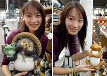
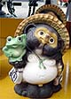
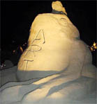
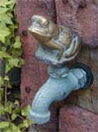
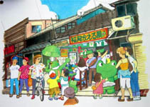
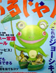

たぬきの手にカエルが！ 【福岡発=走るかえるリョーコ同志記者】ガーデニングコーナーで、かえる二匹を発見しました。しかも、一匹は、たぬきの手のひらにカエルが乗っているんです。お庭にほしいなー。その昔は、たぬきといえば、」右手に大福帳、左手に徳利ではなかったでしょうか。時代の変化とともに、たぬきもカエルを愛でるようになったんですねー。ほかにもカエル単独のガーデニンググッズが登場していました。お庭にも欠かせないアイテムになったんですねー。
 【全国かえる奉賛会】そうだああ。しかも、たぬきの下腹部から、どでかい×ン×マが、ぶーらぶらしていたのであるーっ！！しっかし、そんなお下品なものを、ガーデニングの庭に並べておくわけがないではないかあ。世間の需要にこたえるべく、たぬきも洗練された姿に進化をとげて、キ×タ×は、ぐぐっと小さく、目立たないようになり、手のひらには酒とともに、誰にも愛されるカエルを乗せた姿で再登場したのである。これなら、洋風のガーデニング庭園にも、ぴったしではないかああああああああ。さあ、夏休みも終わり秋の始まりに、カエル乗りタヌキを買って庭に据え付けようではないかア。きっと楽しいことがあるぞおお。 う、かわいいカエル発見！【福岡発げこげこ大王直筆】ひさびさに一目惚れしたなー。このカエル。一生懸命なとこがいいよね。いつになったら空気いっぱいになるんでしょ。気になるーっ！！
 砂浜にカエル造型物！【福岡発すみ様】砂浜の美術展にいた「童心にカエル」。八幡中央高校芸術コース「童心にカルル」の作品です。砂でできているとは思えないほど体がなめらか。大きな足が印象的でした。カエル以外の作品もたくさんあったけど、やっぱーカエルが一番ですよねーっ。 砂浜カエルグランプリに決定！【全国かえる奉賛会】素晴らしい。さすがに芸術コースだけある。テーマの選定自体で、グランプリ確実である。表彰状を送りたいので、八幡中央高校芸術コースは、大王あてに連絡をくれい！来年もぜひカエルで再挑戦してほしいぞー。世間の評判がなにするものぞ。カエラー多数が参観できるように来年度は大々的に支援するものであるーっ。全国かえる奉賛会は、製作に関わった生徒一同に記念品を贈呈するとともに、感状を発行して、力作をたたえるものであるーっ！！
 伊豆にカエル専用水道！【福岡発松本サルト様御友人のＭＵＬＴＩさま】ちゃんと真面目にやってるふりしてますかー。協調性を発揮してますー？トミカです。おひさしぶしです。きょうは知人のまるちさんからの伝言投稿を承りましたので転送します。ＭＵＬＴＩ曰く、『伊豆でカエルを見つけました。ストロボ有り、無しで撮ってみましたちなみに捕獲場所はここです』っつーわけで、写真を転送しますねー。んぢゃ、また。
【全国かえる奉賛会】いやー陣中見舞い有り難うございます。大王は大王稼業の本業の他に、副業としてサラリーマンやっているんですが、大王の地位に甘んじるあまりに、サラリーマンとしての協調性がおろそかになっているのではないかと、心配していただいているのです。しかし、そこは副業にも誠心誠意打ち込むのも、下々の気持ちを学ぶ大王学というもの。みなさんとともに、日夜額に汗して働いておりまする。それにしても、この水道って、ひねるとオタマ入りの水が出てくるのかな！
フィリピンのガマ口は恐怖の本物！【フィリピン発ケロリカ同志記者】大王様。初めてお便りいたします。幼少の頃、「お姫様がヒキガエルにキスをすると、魔法が解けて王子様になりました！」というおとぎ話を信じ、玄関先にいたヒキガエルをつかんでキスをして、口の回りがかぶれてしまった経験を持つ者でございます。そのときは「やっぱり私がお姫様じゃないからダメだったんだ・・・」と、子供心に落ち込みましたが以後30数年、かえる好きはエスカレートする一方です。
なまもの、作りもの、リアル系、かわいい系なんでも来いですが、数ある私のコレクションの中で、最も珍奇かつ痛ましいかえるは「乾きもの」であります。10年ほど前、フィリピンのマニラ空港で手に入れた小銭入れ。なんと、本物のかえる（おそらくヒキガエル）の皮で作られています。かえる様の上半身をブッタ切った状態の、早い話が剥製状態。恨めしそうな表情の顔にはプラスチックの目玉が嵌め込まれており、腹の部分にチャックが付いて、これがほんとのガマぐちであります。が、あまりにかわいそうなので、仏様の横に置いて、いつも供養しています。
【全国かえる奉賛会】ぎょえええええええ。このフィリピンのガマ口カエル財布情報は、各地からも寄せられているのですが、誰も画像を配達してくれません。カエラー同志の温かい配慮に、感謝いたします。フィリピンには、いったことがないから、よかったああ。
カエル展会場のイラストできる！ 【福岡発エンジョイスペース緒方様】カエル展会場の大家でございます。エンジョイスペースという名称が、あの場所の正式名称なのですが、３年連続で『カエル展会場』となったことで、『カエル展の場所』といった方が通りがよいようになってしまいました。
これではいかんと、知人のイラストレーターに頼んで、エンジョイスペースのイラストを描いてもらったのですが、これまた、カエル展の印象が強烈すぎたのでしょう。カエル展そのものを描かれてしまい。エンジョイスペース＝カエル展という印象がさらに拡大してしまいました。
 カエルであるじゃん！【福岡発げこげこ大王直筆】けろ天市場のメインバンクとして、取り引きしている三和銀行で、雑誌をみていたら、表紙に傘をさしたカエルをあしらった雑誌を発見しました。『あるじゃん』という雑誌で、中身は、貯蓄とか金の増やしかたで、金がカエルは縁起がよいので採用されたのかなー。でも、なんか不思議なカエルでうれしかったです。
なんかお金持ちそうなカエルだよねー。あるじゃん。というくらいなので、フランスカエルなのかなーっ！！
携帯＠かえる指令に俳句作品！【全国かえる奉賛会】携帯i-mode用の企画「カエル指令」の第２弾は、カエル俳句を投稿することであったあああ。登録６６人のうち、のべ７人が現在までに俳句を投稿してくれたあああ。感謝！
訪問１７７７７７人目に記念品！【全国かえる奉賛会】かえる新聞またはトップページへの訪問者１７７７７７人目の方に、カエルグッズをプレゼントしますうううう。見事にカウンタ踏んだ人は、例によって自己申告してちょー。
投稿採用者に武功カエル徽章を授与！ |
||||||||||||||||||||||||||||||
かえる古新聞過去に取り上げた記事を見出し付きで一覧したい人は、ここをクリック◆創刊号を見る◆先週号を見る◆話題の号を見る◆かえる新聞の昔を読む◆COOL NET FROG RANKING !
|
私も入っています。。全国かえる奉賛会
大王様に会うには、このバナーをクリック。ずっと奥に写真館があるぞ。全国かえる奉賛会に入会するには、自分のホームページのどこかに、下の部分を追加するとバナーがリンク付きで表示されるぞ。どんどん入会しましょー |


|